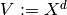
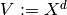
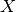
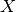

LinDeformFixedTempl¶
-
class
odl.deform.linearized.LinDeformFixedTempl(*args, **kwargs)[source]¶ Bases:
odl.operator.operator.OperatorDeformation operator with fixed template acting on displacement fields.
The operator has a fixed template
Iand maps a displacement fieldvto the new functionx --> I(x + v(x)).See also
LinDeformFixedDispDeformation with a fixed displacement.
Notes
For
 , we take
to be the template space, i.e. . Then the vector field
space is identified with . Hence the deformation operator
with fixed template maps
, we take
to be the template space, i.e. . Then the vector field
space is identified with . Hence the deformation operator
with fixed template maps  into :
into :i.e., .
Note that this operator is non-linear. Its derivative at
 is
an operator that maps into :
is
an operator that maps into :i.e., ,
which is to be understood as a point-wise inner product, resulting in a function in . And the adjoint of the preceding derivative is also an operator that maps into
:i.e., .
- Attributes
adjointAdjoint of this operator (abstract).
domainSet of objects on which this operator can be evaluated.
interpInterpolation scheme or tuple of per-axis interpolation schemes.
interp_byaxisTuple of per-axis interpolation schemes.
inverseReturn the operator inverse.
is_functionalTrueif this operator’s range is aField.is_linearTrueif this operator is linear.rangeSet in which the result of an evaluation of this operator lies.
templateFixed template of this deformation operator.
Methods
_call(self, displacement[, out])Implementation of
self(displacement[, out]).derivative(self, displacement)Derivative of the operator at
displacement.norm(self[, estimate])Return the operator norm of this operator.
-
__init__(self, template, domain=None, interp='linear')[source]¶ Initialize a new instance.
- Parameters
- template
DiscretizedSpaceElement Fixed template that is to be deformed.
- domainpower space of
DiscretizedSpace, optional The space of all allowed coordinates in the deformation. A
ProductSpaceoftemplate.ndimcopies of a function-space. It must fulfilldomain[0].partition == template.space.partition, so this option is useful mainly when using different interpolations in displacement and template.Default:
template.space.real_space.tangent_bundle- interpstr or sequence of str
Interpolation type that should be used to sample the template on the deformed grid. A single value applies to all axes, and a sequence gives the interpolation scheme per axis.
Supported values:
'nearest','linear'Warning
Choosing
'nearest'interpolation results in a formally non-differentiable operator since the gradient of the template is not well-defined. If the operator derivative is to be used, a differentiable interpolation scheme (e.g.,'linear') should be chosen.
- template
Examples
Create a simple 1D template to initialize the operator and apply it to a displacement field. Where the displacement is zero, the output value is the same as the input value. In the 4-th point, the value is taken from 0.2 (one cell) to the left, i.e. 1.0.
>>> space = odl.uniform_discr(0, 1, 5) >>> template = space.element([0, 0, 1, 0, 0]) >>> op = LinDeformFixedTempl(template, interp='nearest') >>> disp_field = [[0, 0, 0, -0.2, 0]] >>> print(op(disp_field)) [ 0., 0., 1., 1., 0.]
The result depends on the chosen interpolation. With ‘linear’ interpolation and an offset of half the distance between two points, 0.1, one gets the mean of the values.
>>> op = LinDeformFixedTempl(template, interp='linear') >>> disp_field = [[0, 0, 0, -0.1, 0]] >>> print(op(disp_field)) [ 0. , 0. , 1. , 0.5, 0. ]